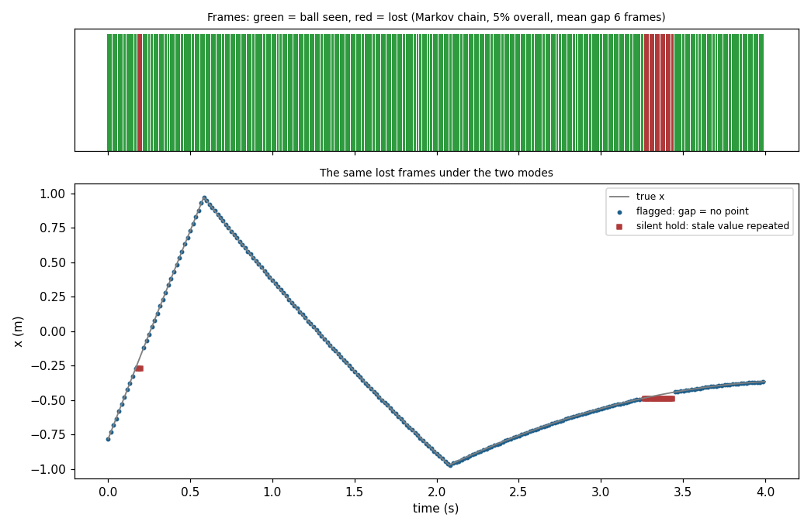

الدرس C4 · الطبقة 1: الحدس
الانقطاع (dropout)
انتقلنا إلى C4 كما طلبت. جواب السؤال السابق: خطأ تقدير التأخير 10 ms عند 5 م/ث يعطي 50 mm، مقابل 30 mm عند 3 م/ث.
1. ما هو الانقطاع؟
أحياناً لا نحصل على مكان الكرة في إطار ما. الأسباب: الذراع تحجب الكرة عن الكاميرا، أو فشل الكشف، أو ضياع الإطار في النقل. في هذه الإطارات لا يصل قياس جديد.
2. طريقتان لحدوثه (كلتاهما نختبرها)
- الانقطاع المُعلَن (flagged): النظام يقول بصراحة «لا كرة في هذا الإطار» (valid = False). الـ estimator يعرف أنه لا قياس، فيكتفي بالتنبؤ.
- الاحتفاظ الصامت (silent hold): النظام يعيد آخر مكان صحيح كأنه قياس جديد صحيح (valid = True). الـ estimator يظن أن الكرة وقفت في مكانها!
الثاني أخطر: لا إشارة تحذير. هذا قرارك (اخترتَ اختبار الاثنين، الأول رئيسي والثاني للمتانة).
3. الصورة (من الـ Sensor الحقيقي عندنا)

- الأعلى: الإطارات الأخضر = رأينا الكرة، الأحمر = ضاعت. نلاحظ أن الضياع يأتي في كتل (إطار واحد عند 0.2 ث، وكتلة من حوالي 11 إطاراً عند 3.3 ث) وليس موزعاً منفرداً.
- الأسفل: الخط الرمادي هو مكان الكرة الحقيقي x(t) (ترتد عن الجدار عند 0.6 ث وعند 2.1 ث). النقاط الزرقاء هي القياسات في الوضع المُعلَن (لا نقاط في الفجوة). المربعات الحمراء هي الوضع الصامت: تكرار القيمة القديمة في خط أفقي، بينما الكرة الحقيقية تواصل الحركة.
4. لماذا في كتل؟ (سلسلة ماركوف)
نمذجنا الانقطاع كسلسلة بحالتين: «مرئي» و«ضائع». احتمال الانتقال من ضائع إلى مرئي q = 1/6 في كل إطار، فمتوسط طول الفجوة 6 إطارات (6 × 16.7 = 100 ms). واحتمال البدء محسوب ليكون الضياع الكلي 5%.
الفرق عن السحب المستقل لكل إطار: في اختبار سابق (1D)، 5% بسحب مستقل أعطت فجوات متوسطها 18 ms وأطولها 67 ms، أما بسلسلة ماركوف فمتوسطها 103 ms وأطولها 650 ms. الواقع (الحجب بالذراع مثلاً) أقرب إلى الكتل الطويلة.
5. ماذا وجدنا في الجداول؟ (500 إطلاق)
| now position error (mm) | ideal | flagged | silent |
| fd | 1.8 | 30.7 | 38.6 |
| ekf19-none | 1.9 | 3.5 | 39.3 |
| oracle (no gate) | 1.7 | 1.8 | 39.3 |
الانقطاع المُعلَن سهل على الـ EKF (3.5 مم) لأنه يتنبأ بنموذجه. والصامت يضرّ الكل (حوالي 40 مم)، إلى أن أضفنا حارس التكرار (+stale) فعاد إلى 3.5.
سؤال للتأكد (احسب بنفسك)
فجوة بطول متوسط (6 إطارات = 100 ms) وكرة بسرعة 3 m/s: كم متراً تقطعها الكرة خلال الفجوة؟ وماذا يظن الـ estimator في الوضع الصامت عن مكانها؟
القادم: C4 الطبقة 2 (التعريفات: سلسلة ماركوف، متوسط الفجوة ومعدل الضياع).